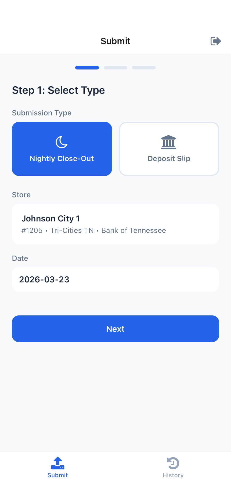
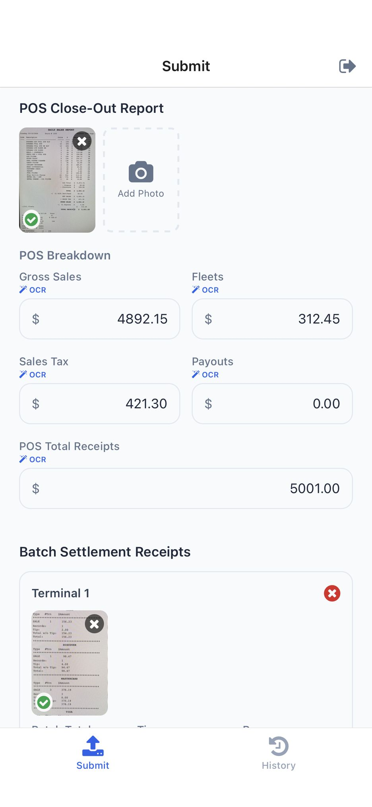
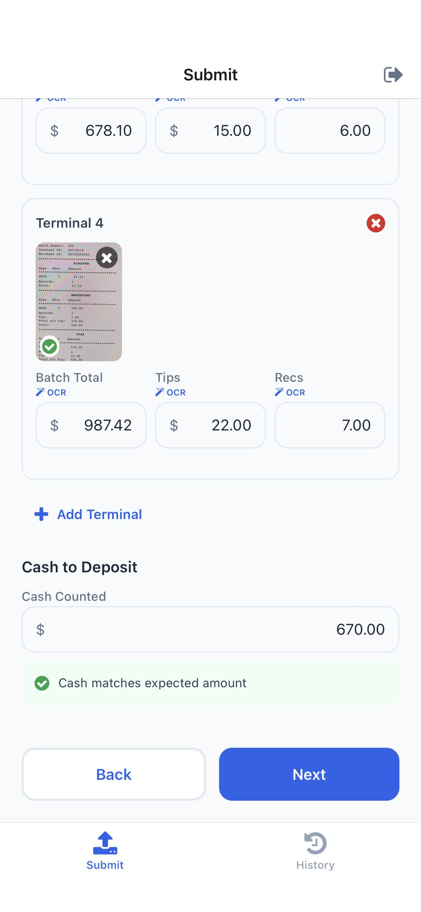
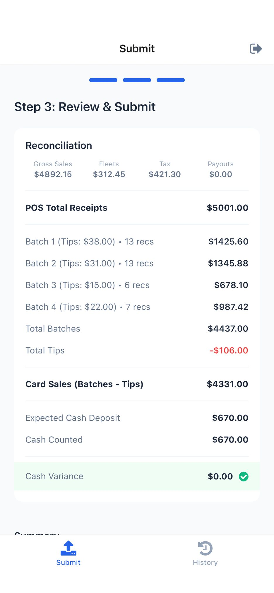
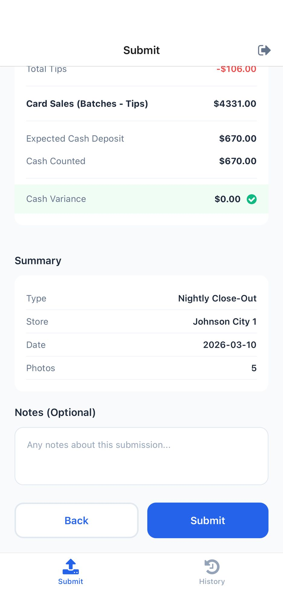
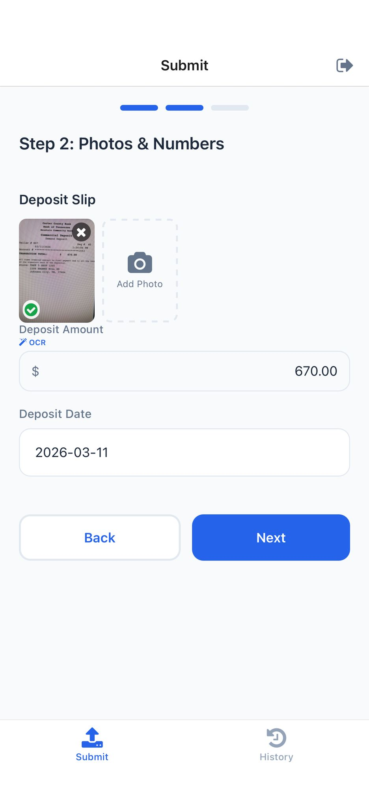
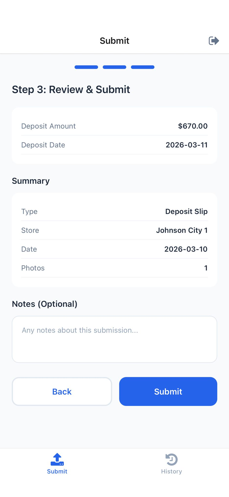
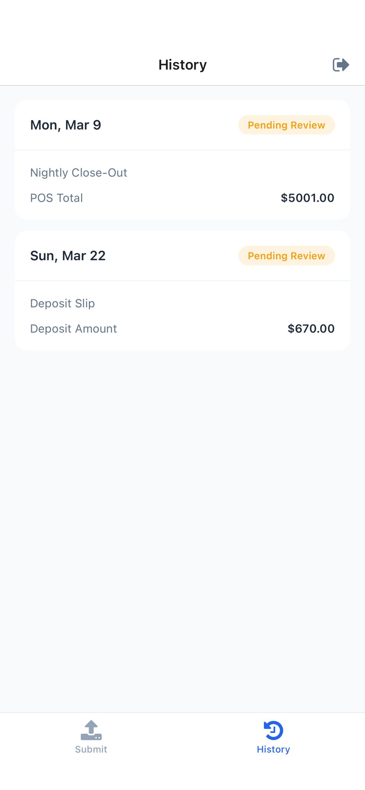

The Take 5 Close-Out mobile app has completed its initial round of functional testing. We walked through a full day's close-out workflow using AI-generated test receipts for Store #1205 (Johnson City 1). After working through roughly 10 bugs encountered during testing, all core features — photo capture, OCR extraction, reconciliation math, and submission — are now working as expected.
The manager selects "Nightly Close-Out" or "Deposit Slip" and confirms their store. Store details (name, number, market, bank) auto-populate from the manager's account.

The manager photographs each receipt. The app sends each photo through OCR and auto-fills the corresponding fields (marked with a green "OCR" badge). All values remain editable if the manager needs to correct anything.


| Document | Fields Extracted | Result |
|---|---|---|
| POS Close-Out Report | Gross Sales ($4,892.15) • Fleets ($312.45) • Tax ($421.30) • Payouts ($0.00) • Total ($5,001.00) | 5/5 correct |
| Batch — Terminal 1 | Total ($1,425.60) • Tips ($38.00) • Records (13) | 3/3 correct |
| Batch — Terminal 2 | Total ($1,345.88) • Tips ($31.00) • Records (13) | 3/3 correct |
| Batch — Terminal 3 | Total ($678.10) • Tips ($15.00) • Records (6) | 3/3 correct |
| Batch — Terminal 4 | Total ($987.42) • Tips ($22.00) • Records (7) | 3/3 correct |
| Deposit Slip | Amount ($670.00) • Date (2026-03-11) | 2/2 correct |
Before submitting, the manager sees a full reconciliation breakdown. The app calculates expected cash from the POS and batch data, compares it to the cash counted, and flags any variance over $15.


After the manager makes the bank deposit, they come back to the app, select "Deposit Slip," photograph the deposit receipt, and the app links it to the matching nightly close-out.


After both submissions, the manager's History tab shows the nightly close-out and deposit slip side by side, each with a "Pending Review" status until office staff reviews them.

| Area | Details | Status |
|---|---|---|
| Nightly close-out wizard (3 steps) | Full end-to-end with 5 photos | Passed |
| Deposit slip wizard | Photo + OCR + submission | Passed |
| OCR extraction — POS report | 5 fields, all correct | Passed |
| OCR extraction — Batch receipts | 3 fields × 4 terminals, all correct | Passed |
| OCR extraction — Deposit slip | 2 fields, both correct | Passed |
| Reconciliation math | $0.00 variance confirmed | Passed |
| Cash verification | Green checkmark when cash matches | Passed |
| Submission history | Both entries appear with correct data | Passed |
| Area | Why It Matters | Status |
|---|---|---|
| Real receipts (thermal paper) | AI-generated receipts are cleaner than actual store receipts — OCR on crumpled, faded, or poorly-lit paper is the biggest remaining unknown | Not tested |
| Variance > $15 flagging | Triggers required reason code picker — built but not exercised | Ready to test |
| Office compliance dashboard | Market filters, store status cards, drill-down — needs live data | Needs live data |
| Email notifications | 10 PM nightly check + 2 PM deposit follow-up — built, not deployed | Needs deployment |
| Multiple stores / users | Verify each manager only sees their own store data | Not tested |
| Offline mode | Queue submissions when offline, sync when reconnected | Not tested |
| Days 2 & 3 test data | Include small variance ($8.50) and flagged variance ($36.50) | Ready |
Key risk: All testing so far used AI-generated receipts, which are cleaner and more consistent than real thermal paper receipts. Testing with actual store receipts is the most important next step before going live.
| Day | Date | POS Total | Total Batches | Cash | Variance | Status |
|---|---|---|---|---|---|---|
| Day 1 | 03/10/2026 | $5,001.00 | $4,437.00 | $670.00 | $0.00 | Tested |
| Day 2 | 03/11/2026 | $5,388.00 | $5,061.00 | $441.00 | +$8.50 | Ready |
| Day 3 | 03/12/2026 | $5,823.00 | $5,518.00 | $412.50 | +$36.50 | Ready |
| # | Store | Variance | Flagged | Scenario |
|---|---|---|---|---|
| 1 | Johnson City 1 | -$0.01 | No | Perfect reconciliation |
| 2 | Augusta 1 | -$446.50 | Yes | Tips not backed out |
| 3 | Aiken 1 | +$417.70 | Yes | Fleet card mismatch |
| 4 | Kingsport 3 | -$142.85 | Yes | Split batch |
| 5 | Asheville 1 | -$158.30 | Yes | Manual entry error |
| 6 | Bristol 1 | +$113.00 | Yes | Refund after close |
| 7 | Augusta 3 | $0.00 | No | Clean 4-terminal day |
| 8 | Hendersonville | +$3.42 | No | Small rounding (under $15) |
| 9 | Greeneville 1 | +$56.00 | Yes | Late deposit (4 days) |
| 10 | North Augusta | -$185.00 | Yes | Missing deposit |
| Period | Est. Photos (16 stores) | Cost |
|---|---|---|
| Daily | ~80–96 photos | $0.35–$0.60 |
| Monthly | ~2,400–2,900 photos | $10–$15 |